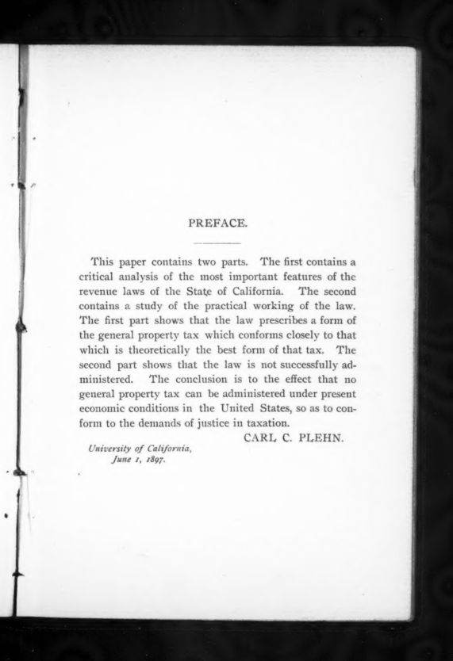

Plehn, 1897: por que o imposto sobre a propriedade falhou na Califórnia
Leitura: 12 min
Carl C. Plehn examina uma das leis de imposto sobre a propriedade mais bem escritas dos Estados Unidos e mostra, com registros oficiais, bancos e seguros, como a riqueza móvel escapava quase toda.


Em julho de 1890, segundo o relatório dos comissários bancários, os bancos da Califórnia tinham em mãos mais de US$ 113 milhões em dinheiro e créditos tributáveis. Na primeira segunda-feira de março daquele ano, data de referência do lançamento, os avaliadores fiscais de todo o estado, somando bancos e particulares, haviam encontrado apenas US$ 25,2 milhões. Se os dois números estivessem certos, observa Carl C. Plehn, o dinheiro do estado teria crescido mais de US$ 88 milhões em quatro meses e, oito meses depois, desaparecido quase todo.
A conta está em The General Property Tax in California, nº 3 do segundo volume dos Economic Studies, de junho de 1897. Plehn, da University of California, assina o prefácio em 1º de junho. O estudo tem duas partes: a primeira analisa a lei de receitas do estado; a segunda, o funcionamento prático do imposto. Seguem-se cinco apêndices: o formulário de declaração do contribuinte e tabelas da avaliação de 1850 a 1896, da proporção entre bens móveis e imóveis, das benfeitorias de São Francisco comparadas ao custo das construções novas e das perdas por incêndio na cidade.
A tese aparece na primeira linha da introdução.
“O imposto geral sobre a propriedade é um fracasso nos Estados Unidos.” (The general property tax is a failure in the United States.)
Para Plehn, a Califórnia era o melhor teste possível. O estado dera ao imposto 47 anos de prova ininterrupta, tinha uma das melhores leis do gênero já escritas e condições tão favoráveis à administração quanto qualquer outro lugar do país. Se o imposto falhou ali, conclui, a falha estava sobretudo no princípio. O autor declara-se adepto da teoria da capacidade contributiva: cada um deve contribuir conforme pode, e a propriedade é apenas um dos indícios dessa capacidade. Adverte também que não defende o imposto só sobre imóveis nem o imposto único sobre a terra.
Como funcionava a lei?
A Constituição mandava tributar toda a propriedade em proporção ao seu valor e a definia de modo amplo: dinheiro, créditos, títulos, ações, franquias e tudo o mais que pudesse ser objeto de propriedade privada. Entre as isenções estavam bibliotecas e escolas públicas, safras em crescimento e pomares e vinhedos ainda jovens. Ações de empresas não eram tributadas, por representarem os mesmos bens da empresa. O valor tributável era o montante pelo qual o bem seria aceito em pagamento de uma dívida justa de um devedor solvente.
A administração cabia a funcionários eleitos nos condados: avaliadores, auditores e coletores. O avaliador exigia de cada proprietário uma declaração escrita e jurada dos bens, mas não do seu valor, que ficava fora do juramento. Segundo os avaliadores ouvidos por Plehn, dos 40 mil contribuintes de São Francisco menos de mil deixavam de entregá-la. Como muita propriedade escapava, deduz o autor, muitos declarantes juravam em falso. Processos por perjúrio eram raros: o avaliador dificilmente achava o bem omitido e preferia penas menores, como a avaliação arbitrária, que podia chegar a dez vezes o valor do bem.
A cobrança também tinha efeitos distributivos. Quando o imposto sobre bens móveis não estava garantido por um imóvel, o próprio avaliador o cobrava no ato, com a alíquota do ano anterior, e podia apreender e vender os bens. Assim, o morador sem imóvel pagava pela mobília meses antes dos demais, enquanto quem tinha imóvel ganhava de três a nove meses de prazo e não corria o risco de ver os móveis vendidos.
Quem pagava o imposto sobre a hipoteca?
A regra mais discutida vinha da Constituição de 1879. Para que o capital não escapasse, o credor pagava sobre o valor da hipoteca e o devedor sobre o valor do imóvel menos a hipoteca; era nulo o contrato que transferisse o tributo ao devedor. Na prática, diz Plehn, o imposto voltava ao devedor na forma de juros mais altos. Como a alíquota variava todo ano, o credor cobrava de um quarto a meio ponto percentual acima dos juros correntes somados ao imposto.
Havia outras distorções. Uma hipoteca feita logo depois do lançamento só era tributada no ano seguinte, mas o devedor já pagava o imposto embutido nos juros. Para Plehn, a melhor solução nas condições da Califórnia seria tributar o proprietário pelo bem inteiro e isentar o credor. Uma emenda nesse sentido fora rejeitada na última eleição, mas, por estar mal redigida, a derrota não podia ser lida como opinião dos eleitores sobre o tema.
Quanto da riqueza móvel escapava?
A segunda parte começa pelo peso crescente do imposto. Desde 1860, a arrecadação estadual com o tributo multiplicou-se por 8,7, enquanto a população crescia 3,8 vezes. Os bens móveis, porém, quase não acompanharam: entre 1880 e 1896, a avaliação dos imóveis mais que dobrou, e a dos móveis subiu menos de 8%. Plehn considera inconcebível que 1,5 milhão de habitantes tivessem quase o mesmo patrimônio móvel que os 860 mil de 1880.
Com cálculos como o da abertura, Plehn conclui que não mais de 20% do dinheiro e dos créditos tributáveis chegavam às listas, e que o que escapava somava pelo menos US$ 300 milhões, quase o dobro de todos os bens móveis avaliados. Ele atribui a evasão menos aos bancos que aos depositantes. Quando, em 1896, os comissários bancários passaram a exigir um balanço na data do lançamento, a avaliação de dinheiro e créditos no estado subiu quase 74% num só ano.
Outra prova vem dos seguros. Em São Francisco, as perdas por incêndio de 1884 a 1896 mostraram que o conteúdo dos prédios destruídos valia 2,74 vezes os próprios prédios. Era de esperar, portanto, que os bens móveis da cidade fossem avaliados em pelo menos 2,74 vezes os edifícios. Em 1896, os móveis, fora dinheiro e créditos, foram avaliados em pouco mais da metade do valor atribuído aos edifícios.
O fazendeiro pagava mais que o morador da cidade?
A desigualdade também atingia os imóveis. Pelos números do censo de 1890, a relação entre valor avaliado e valor verdadeiro variava, em dezenove cidades, de 26% em Riverside a 95% em Eureka. Plehn adverte que não convém dar muito peso às diferenças menores, mas suas próprias visitas a trinta condados confirmavam a falta de uniformidade.
Entre campo e cidade, ele estima que os imóveis rurais eram avaliados a pouco menos de dois terços do valor verdadeiro e os lotes urbanos a cerca de 55%, com São Francisco como exceção. O resultado é que os imóveis do fazendeiro médio, 90% da sua propriedade tributada, ficavam de 8% a 12% mais carregados que os do morador urbano. Plehn dá duas explicações: terras agrícolas mudam menos de mãos e têm valor mais estável, e a hipoteca, que facilita a avaliação, atingia uma parte maior das terras rurais.
Daí o seu argumento contra o imposto único sobre a terra. As benfeitorias eram de 12,1% a 14,5% da avaliação dos imóveis rurais e mais de um terço da dos urbanos. Isentá-las aliviaria a cidade e pesaria sobre o campo. A única marca da campanha de Henry George na lei californiana, registra Plehn, era a regra de avaliar igualmente terras de mesma qualidade, cultivadas ou não.
A subavaliação geral tinha algum mérito?
Plehn constata que a meta habitual dos avaliadores era 60% do valor de mercado, contra a lei, as ordens do conselho de equalização e o discurso público dos próprios avaliadores. Quando uma avaliação era contestada, aplicava-se a ficção do valor integral, e aquele bem ficava cerca de 40% acima dos demais. A equalização, assim, produzia desigualdade.
“Esta é só uma das muitas maneiras pelas quais este imposto pratica uma mentira.” (This is only one of the many ways in which this tax works a lie.)
Ele reconhece, porém, um efeito compensatório. Se a utilidade de cada acréscimo de patrimônio é menor que a do anterior, um desconto percentual igual para todos alivia mais o pobre que o rico. No exemplo, A tem US$ 1.000 e B, US$ 10.000, e ambos pagam 2% sobre 60% do valor; a economia de A pesa mais para ele do que a de B para B. O imposto, regressivo pela evasão dos mais ricos, torna-se assim em alguma medida degressivo pela subavaliação, ao menos nos imóveis.
O que aconteceu com as ferrovias?
Desde a Constituição de 1879, as ferrovias que operavam em mais de um condado eram avaliadas pelo conselho estadual de equalização, e o valor era repartido entre os condados pela extensão de linha em cada um. As empresas resistiram, e seguiram-se dezessete anos de litígio. Os impostos de 1885 a 1887 continuavam sem pagamento até 1893, quando o legislativo mandou reavaliar os casos anulados; o pagamento final só veio em 22 de novembro de 1894. Uma decisão da Suprema Corte estadual de janeiro de 1895, mantida pela Suprema Corte dos Estados Unidos em junho de 1896, fixou que o conselho podia avaliar a franquia estadual, o leito, os trilhos e o material rodante, mas não a franquia federal.
Quem arcava, afinal, com o imposto?
No último capítulo, Plehn procura a incidência. Das cinco grandes atividades agrícolas do estado, trigo, laticínios, frutas e nozes, uvas e vinhos, ovinos e lã, só nos laticínios via condições para repassar parte do imposto ao consumidor: a oferta parecia limitada e os preços eram algo mais altos que no Leste, embora os custos fossem menores. No trigo, a Califórnia não tinha poder sobre o preço. Nos imóveis urbanos não havia regra: nas cidades em crescimento rápido o imposto passava aos inquilinos; nas surgidas em épocas de euforia e agora em declínio, nunca. Sobre os bens móveis, admite, nada se podia afirmar com segurança.
A conclusão da primeira parte resume o estudo. A lei californiana descreve quase o ideal de um imposto geral sobre a propriedade; se os resultados contrariam a justiça, a culpa não é de quem a redigiu. Numa nota, Plehn diz que a sua impressão dos funcionários fiscais do estado, que conhecia de perto, era a de que eram em geral honestos, fiéis e competentes. O problema estava na base do tributo.
“Atualmente, a propriedade não é uma indicação justa da capacidade de contribuir para o sustento do governo.” (property is not a fair indication of ability to contribute to the support of the government)
Na minha leitura
Na minha leitura, o mais duradouro no estudo é o método de medir a evasão. Plehn não tem acesso às declarações individuais, então confronta a base tributária com fontes independentes: os balanços dos bancos, as perdas registradas pelos seguradores de incêndio, o censo, o custo das construções novas. É a mesma lógica das estimativas atuais de hiato tributário, que comparam o que deveria ser declarado com o que de fato chega ao fisco.
O estudo também mostra um dilema permanente da tributação do patrimônio: quanto mais a riqueza assume formas móveis e intangíveis, mais o imposto recai sobre o que é visível, como terra, casas e instrumentos de trabalho. A subavaliação informal, que Plehn vê como uma progressividade involuntária, é o tipo de correção que nasce quando a lei pede uma precisão que a administração não consegue entregar.
Glossário
- Imposto geral sobre a propriedade (general property tax)
- tributo anual sobre todo o patrimônio, imóvel e móvel, com a mesma alíquota proporcional.
- Capacidade contributiva (faculty theory)
- princípio de que cada um deve pagar conforme a sua capacidade de contribuir.
- Equalização
- ajuste das avaliações entre contribuintes ou condados para torná-las uniformes.
- Créditos solventes (solvent credits)
- dívidas a receber de devedores solventes, sem garantia hipotecária.
- Franquia (franchise)
- privilégio especial concedido pelo governo, como o direito de explorar um serviço.
- Cadastro
- registro permanente dos imóveis, com mapas e proprietários.
- Repasse (shifting)
- transferência do peso de um imposto a outra pessoa, por preços ou juros.
- Imposto único (single tax)
- proposta de Henry George de tributar só o valor da terra, isentando as benfeitorias.
- Degressivo
- imposto que pesa proporcionalmente menos sobre patrimônios ou rendas menores.
Fontes
- The General Property Tax in California (pp. 119–186). Internet Archive (número completo, PDF)
- Appendices A–E (pp. 187–198). Internet Archive (número completo, PDF)
- Número completo digitalizado (domínio público): Internet Archive.
Documento em domínio público (EUA, publicado antes de 1931), via JSTOR Early Journal Content e Internet Archive. Resumo e comentário do autor deste site, sem afiliação com a American Economic Association. Encontrou um erro? Escreva: a correção é publicada no próprio texto, com data.
← ES 8 · George, 1897: quem financiava os saloons de Chicago? ES 10 · Willcox, 1897: o censo de 1890 errou a população do país? →